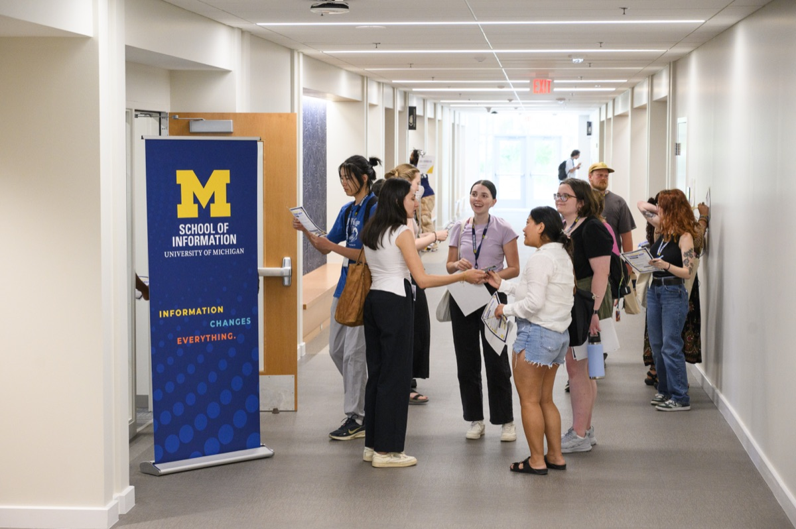

Launch Your Engaged Learning Experience
This page helps you get ready for your project and get off to a strong start. Use it to understand your project context, check your team's readiness, set expectations, and begin a productive partnership with your partner.
Read it when you are preparing for a project or have just been matched with a partner, and before your first meeting.

Why the Work Starts Before the Project
Engaged learning at UMSI is different from a traditional class assignment. You are working outside a controlled classroom setting, with real people, organizations, and communities.
The first phase is less about jumping into execution and more about building a strong foundation for ethical, sustainable work. Before you start, reflect on your positionality (how your background and experiences shape the way you see a problem), take stock of your team's skills, and listen closely to your partner's goals.
When you start with mutual respect, clear boundaries, and honest communication, a class deliverable can become a partnership where both sides contribute and benefit.
Phase 1: Preparing for the Experience
Before creating a solution, take time to understand the context, evaluate your team's readiness, and identify what you still need to learn.
Approach the Work as a Collaborative Learner
Before writing code, sketching wireframes, or analyzing data, consider how your identity and previous experiences influence the way you understand the project.
Your role is not to enter an organization or community as an outside expert who will fix a problem. Your role is to listen, ask questions, contribute your developing expertise, and work alongside people who understand their organization and community.
Preparation Goals
- Develop social and community awareness: Examine your identity, positionality, assumptions, and privileges. Learn about the community's history and consider how power may affect participation and decision-making.
- Understand expectations: Review program requirements, project commitments, leadership responsibilities, deadlines, and expected outcomes before beginning the work.
- Assess team readiness: Identify each team member's skills, interests, availability, responsibilities, and learning goals. Determine where the team may need additional knowledge or support.
- Begin project scoping: Learn about the organization's needs, intended users, constraints, and desired outcomes before committing to a solution.
Questions to Consider
- What do I hope to learn from this experience?
- Who will be affected by the project and its outcomes?
- What assumptions am I making about the partner, community, or project?
- What knowledge and skills does my team already have?
- What knowledge or perspectives are missing from our team?
- How will the partner participate in project decisions?
- What would a mutually beneficial outcome look like?
Recommended Preparation Process
- Reflect on your position: Identify the experiences, identities, assumptions, and areas of privilege that may shape your approach.
- Learn about the context: Research the organization, community, project history, affected stakeholders, and broader social conditions.
- Set learning goals: Record the technical, professional, interpersonal, and ethical skills you want to develop.
- Review team capacity: Compare the team's skills and availability with the likely needs of the project.
- Identify open questions: Write down what your team needs to learn from the partner before confirming the project's scope, methods, or deliverables.
Featured Preparation Resources
For all students
- Social Identity Snapshot (web page)
- Diagnostic tool to reflect on self-awareness and positionality before entering community contexts.
- "Check Yourself" Community Engagement Checklist (Google Doc)
- Quick audit for personal assumptions and ethical readiness.
- IAP2 Spectrum of Public Participation (Google Drive file)
- Framework for understanding levels of community involvement and decision-making power.
- Project Scoping Handout & Terms (Google Doc)
- Guidance on translating partner needs into realistic project goals.
- Project Management Worksheet (Google Doc)
- Guidance on clarifying the project scope and objectives, team roles, and timeline. This worksheet can be used by the project team and shared with the client.
For student org leaders
- Student Org Officer Guide (Google Doc)
- Roles, expectations, and commitments for student organization officers.
- Project Manager Guide (Google Doc)
- Roles, expectations, and commitments for student project managers.
- Project Manager Commitment Form (Google Doc)
- Formal agreement outlining responsibilities for student leads.
Phase 2: Starting the Experience
Getting Started
Establishing professional communication, conducting initial meetings, and finalizing partnership agreements.
Why the First Meeting Matters
First impressions shape the trajectory of a partnership. The starting phase is where abstract project ideas turn into structured, professional commitments. By establishing clear team contracts, co-creating agendas, and aligning on project scope early, you build psychological safety within your team and trust with your client. Learning how to navigate early ambiguity is one of the most valuable professional capabilities you will gain at UMSI.
What You Will Do in This Phase
- Partner Communication: Draft clear, professional outreach to launch working relationships.
- First Meeting: Structure productive kickoff meetings that define roles and project limits.
- Formalizing Agreements: Document team commitments and scope agreements shared by all stakeholders.
Featured Starting Resources
Use the following resources to support your starting phase:
For all students
- Initial Client Email Examples (Google Doc)
- Plug-and-play email templates for first contact with clients and partners.
- Initial Client Meeting Sample Agenda (Google Doc)
- Step-by-step structure for running a professional kickoff call.
- Ginsberg Center Student-Client Partnership Toolkit (web page)
- Principles for building reciprocal, respectful community relationships.
- Student-Client Partnership Guide (Google Drive file)
- Standard guidelines for managing expectations and deliverables.
For student org leaders
- Student Org-ELO Partnership Agreement Template (Google Doc)
- Formal contract establishing roles between student teams and ELO.
- SO-ELL Schedule (Google Sheet)
- Overview of key milestones, deadlines, and submission dates.
What Comes Next
Once your project is underway, continue to During Your Experience.
Need help? Email umsi.engagement@umich.edu.